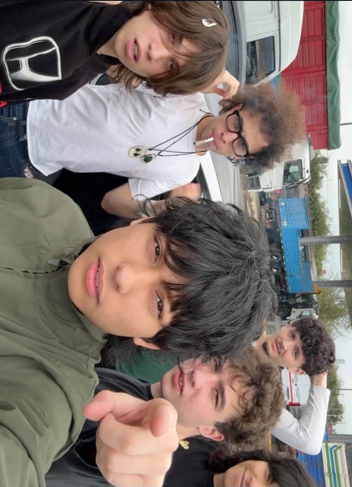

Sobre UNDR:
UNDR es una firma de ropa nacida en los márgenes de la cultura urbana contemporánea. Nos alejamos del ruido visual y de los colores estridentes para enfocar nuestra estética en lo esencial: tonos apagados, esquemas monocromáticos y una presencia imponente. Nuestra propuesta fusiona la crudeza del streetwear underground con la funcionalidad táctica del camuflaje clásico y la textura industrial del Realtree. Cada prenda está diseñada para integrarse con el entorno sin perder identidad, ofreciendo siluetas versátiles para quienes habitan la ciudad en sus propios términos. No vendemos modas pasajeras; vestimos el anonimato y la resistencia del día a día.